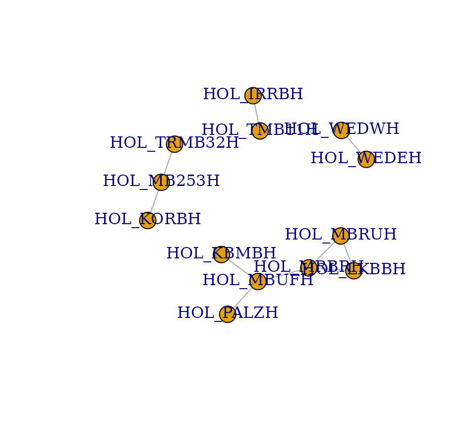
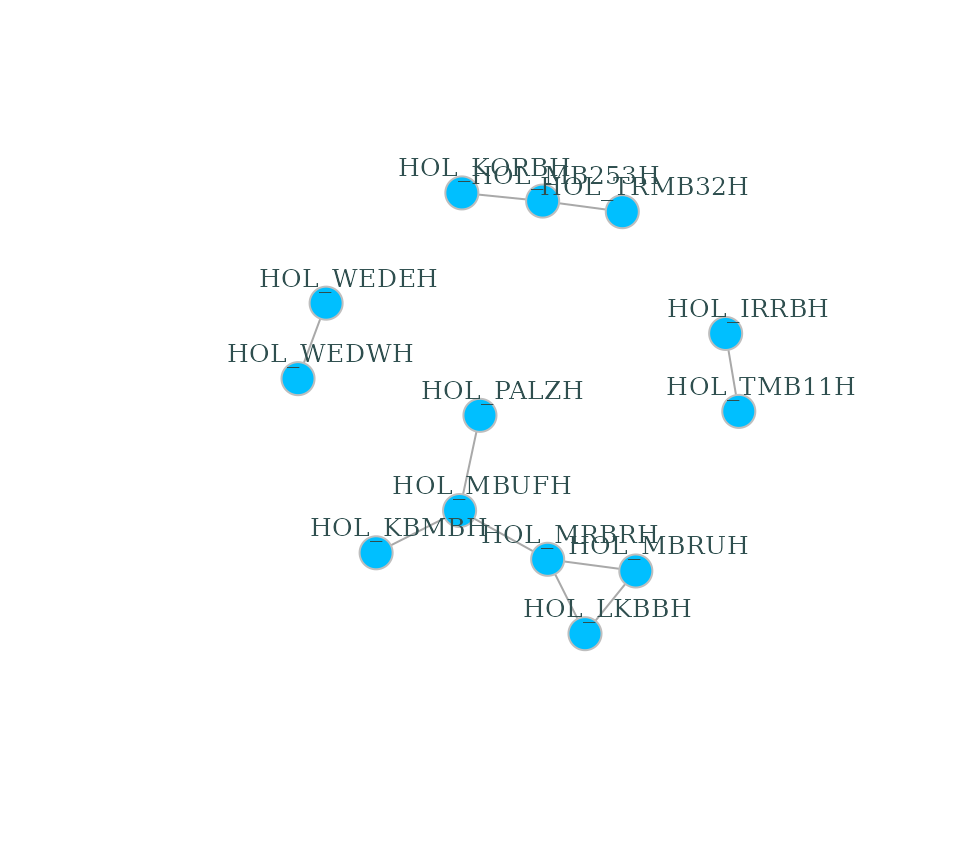

dendroNetwork is a package to create dendrochronological networks for gaining insight into provenance or other patterns based on the statistical relations between tree ring curves. The code and the functions are based on several published papers (Visser 2021, 2021; Visser and Vorst 2022).
The package is written for dendrochronologists and have a general knowledge on the discipline and used jargon. There is an excellent website for the introduction of using R in dendrochronology: https://opendendro.org/r/. The basics of dendrochronology can be found in handbooks (Cook and Kariukstis 1990; Speer 2010) or on https://www.dendrohub.com/.
Usage
The package aims to make the creation of dendrochronological (provenance) networks as easy as possible. To be able to make use of all options, it is assumed that Cytoscape (Shannon et al. 2003) is installed (https://cytoscape.org/). Cytoscape is open source software and platform independent and provides easy visual access to complex networks, including the attributes of both nodes and edges in a network (see the Cytoscape-website for more information). Some data is included in this package, namely the Roman data published by Hollstein (Hollstein 1980).
The first steps are visualized in the flowchart below, including community detection using either (or both) the Girvan-Newman algorithm (Girvan and Newman 2002) and Clique Percolation Method (Palla et al. 2005) for all clique sizes. Both methods are explained very well in the papers, and on wikipedia for both CPM and the Girvan-Newman algorithm. More information on the dendrochronological data can be found in a separate vignette.
library(dendroNetwork)
data(hol_rom) # 1
sim_table_hol <- sim_table(hol_rom) # 2
g_hol <- dendro_network(sim_table_hol) # 3
g_hol_gn <- gn_names(g_hol) # 4
g_hol_cpm <- clique_community_names(g_hol, k=3) # 4
hol_com_cpm_all <- find_all_cpm_com(g_hol) # 5
# plotting the graph in R
plot(g_hol) 
# better readable version
plot(g_hol, vertex.color="deepskyblue", vertex.size=15, vertex.frame.color="gray",
vertex.label.color="darkslategrey", vertex.label.cex=0.8, vertex.label.dist=2) 
For large datasets of tree-ring series see also
vignette("large_datasets_communities") .
Visualization in Cytoscape
After creating the network in R, it is possible to visualize the network using Cytoscape. The main advantage is that visualisation in Cytoscape is more easy, intuitive and visual. In addition, it is very easy to automate workflows in Cytoscape with R (using RCy3). For this purpose we need to start Cytoscape firstly. After Cytoscape has completely loaded, the next steps can be taken.
- The network can now be loaded in Cytoscape for further
visualisation:
cyto_create_graph(g_hol, CPM_table = hol_com_cpm_all, GN_table = g_hol_gn) - Styles for visualisation can now be generated. However, Cytoscape
comes with a lot of default styles that can be confusing. Therefore it
is recommended to use:
cyto_clean_styles()once in a session. - To visualize the styles for CPM with only k=3:
cyto_create_cpm_style(g_hol, k=3, com_k = g_hol_cpm)- This can be repeated for all possible clique sizes. To find the
maximum clique size in a network, please use:
igraph::clique_num(g_hol). - To automate this:
for (i in 3:igraph::clique_num(g_hol)) { cyto_create_cpm_style(g_hol, k=i, com_k = g_hol_cpm)}.
- This can be repeated for all possible clique sizes. To find the
maximum clique size in a network, please use:
- To visualize the styles using the Girvan-Newman algorithm (GN):
cyto_create_gn_style(g_hol)This would look something like this in Cytoscape:
A more complete description of using Cytoscape with this package can
be found here: vignette("large_datasets_communities") .
Citation
If you use this software, please cite this using:
Visser, R. (2024). DendroNetwork: a R-package to create dendrochronological provenance networks (Version 0.5.0) [Computer software]. https://zenodo.org/doi/10.5281/zenodo.10636310